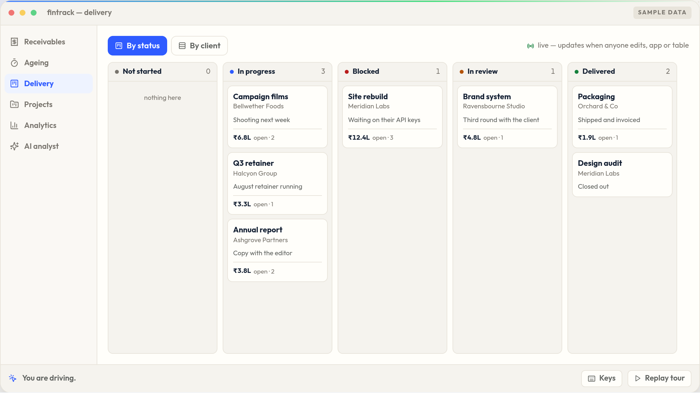
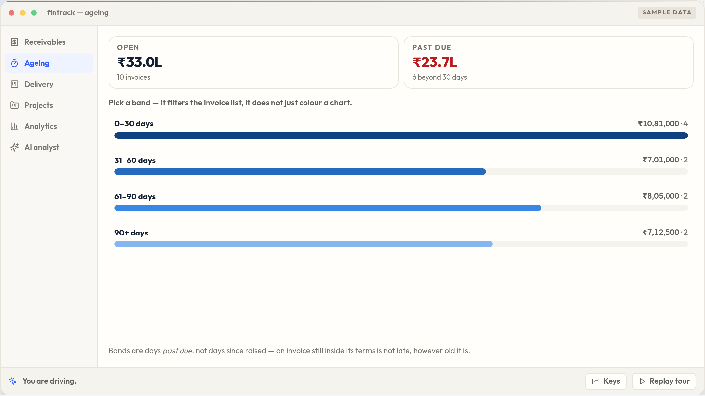
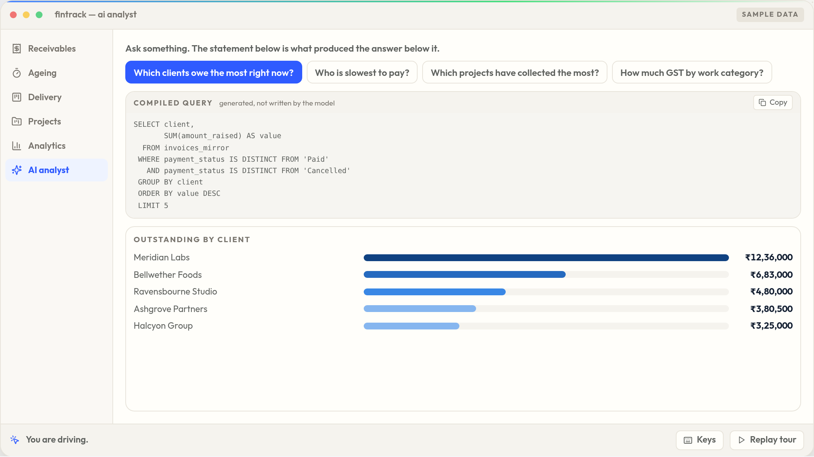

Outstanding this quarter
₹0
₹5,47,850 of that was deducted
before the client paid.
TDS. Nobody owes it to you — and most reports still count it.
FinTrack
The delivery and the money, on one set of records.

Delivery
A project’s lane and what it is owed,
because they are the same record.

Receivables
TDS reported on its own,
never inside outstanding.

AI analyst
Every answer arrives with the query
that produced it.
FinTrack
Drive the real thing. No signup, no demo call.
Sample data · real interface